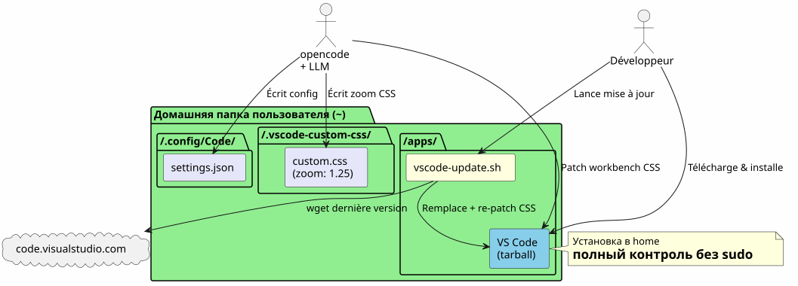
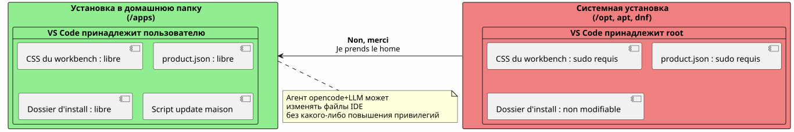
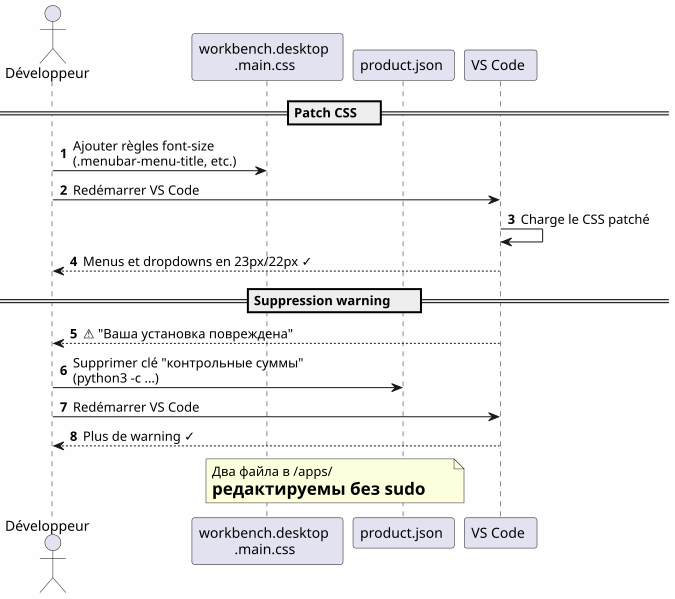
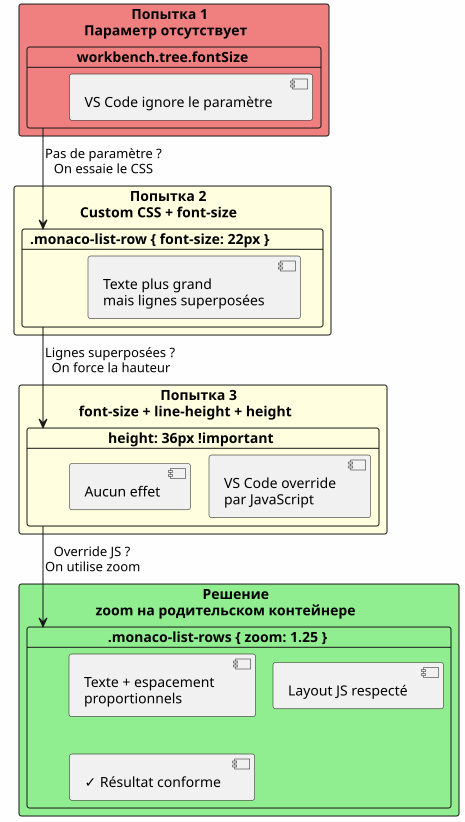
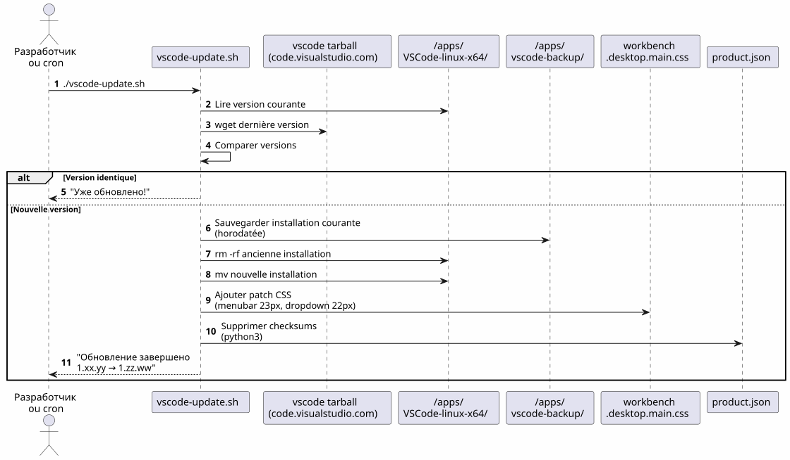
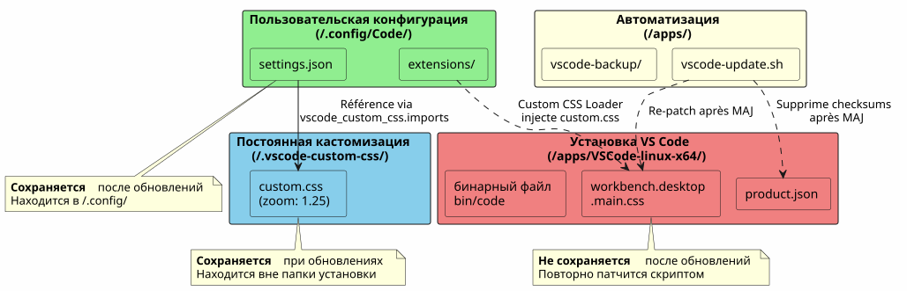
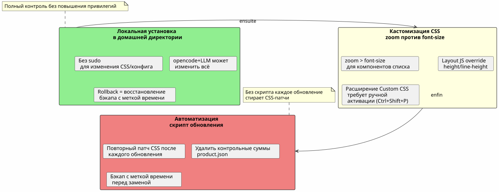

VS Code в домашней директории: локальная установка и настройка шрифтов без sudo
Опубликовано 17 April 2026
Зачем устанавливать VS Code в`/opt`или через`apt`Когда его можно положить в свой home и превратить свой IDE в игровую площадку, никогда не набирая`sudo`? Вот рассказ о локальной установке, за которой последовала упорная борьба за увеличение шрифтов меню и проводника файлов.
- тик
-
[]
Обзор маршрута

Почему: VS Code в Home
Проблема с установкой системы
VS Code установлен через`apt`, dnf`или в/opt`блокирует файлы приложения за правами root. Любое изменение нативного CSS, de`product.json`или из папки установки требуется`sudo`.
Однако, когда используютopencode(tool CLI для управления LLM на своём коде), агенту необходимо уметь:
-
Записывать в файлы конфигурации (
~/.config/Code/User/settings.json) — это уже дома -
Изменить ресурсы IDE (CSS workbench,
product.json) для расширенных настроек — это заблокировано без sudo
Решение: локальная установка
Мы скачиваем официальный архив tarball и сразу распаковываем его в`~/apps/` :
mkdir -p ~/apps
cd ~/apps
wget "https://code.visualstudio.com/sha/download?build=stable&os=linux-x64" -O vscode.tar.gz
tar -xzf vscode.tar.gz
rm vscode.tar.gzБинарный файл затем находится в`~/apps/VSCode-linux-x64/bin/code`. Никакой`sudo`необходимо для чтения, изменения или замены любого файла под`~/apps/VSCode-linux-x64/`.
Конкретные преимущества

| Преимущество | Деталь |
|---|---|
Нет sudo |
Все файлы IDE принадлежат пользователю |
Прямое изменение CSS |
Можно пропатчить`workbench.desktop.main.css`без повышения привилегий |
скрипт домашнего обновления |
Простой скрипт оболочки автоматически загружает, заменяет и перепачивает |
Изоляция |
Системная установка не загрязнена; откат = удалить папку |
Настроить шрифт главного меню
Констатация
Шрифт по умолчанию основного меню (File, Edit, View…) и выпадающих списков слишком мал. VS Code не предоставляет никаких параметров для его изменения.
Техника: прямой патч CSS
Мы добавляем CSS в конец файла`workbench.desktop.main.css`:

CSS_FILE="$HOME/apps/VSCode-linux-x64/resources/app/out/vs/workbench/workbench.desktop.main.css"
cat >> "$CSS_FILE" << 'EOF'
.menubar-menu-title{font-size:23px!important}
.menubar>.menubar-menu-button{font-size:23px!important}
.monaco-menu-option{font-size:22px!important;line-height:34px!important}
.monaco-menu .action-label:not(.codicon){font-size:22px!important}
.menubar-menu-items-holder .monaco-menu .action-item .action-label{font-size:22px!important}
EOFУдалить предупреждение о целостности
VS Code обнаруживает изменения в своих файлах и отображает баннер "Your installation is corrupt". Чтобы избежать этого, удаляются контрольные суммы`product.json`:
import json
product_json = "$HOME/apps/VSCode-linux-x64/resources/app/product.json"
with open(product_json, 'r') as f:
data = json.load(f)
data.pop('checksums', None)
with open(product_json, 'w') as f:
json.dump(data, f, indent=2)После перезагрузки больше нет предупреждений, и меню наконец читаемы.
Настроить шрифт области Обозреватель — бой
Попытка 1: параметр, которого не существует
Сначала пробуем нативный параметр`workbench.tree.fontSize`в`settings.json`:
{
"workbench.tree.fontSize": 20
}Результат:никакого эффекта. Этот параметр не существует в VS Code. Доказательство того, что неизвестные параметры игнорируются молча.
Попытка 2 : расширение Custom CSS and JS Loader
Устанавливаем расширение`be5invis.vscode-custom-css`python
~/apps/VSCode-linux-x64/bin/code --install-extension be5invis.vscode-custom-cssМы создаём файл CSS в`~/.vscode-custom-css/custom.css`с селекторами, нацеленными на элементы обозревателя :
.monaco-tree-rows .monaco-tree-row,
.sidebar .monaco-list-row,
.explorer-viewlet .monaco-list-row,
.monaco-list-row .monaco-icon-label {
font-size: 22px !important;
line-height: 36px !important;
}И мы ссылаемся на этот файл в настройках:
{
"vscode_custom_css.imports": [
"file:///home/user/.vscode-custom-css/custom.css"
]
}Результат :изменения не применяются.
Ловушка: нужно активировать расширение каждый раз
Документация расширения молчит по этому важному пункту: после каждой модификации кастомного CSS, необходимо.обязательновыполнить команду из палитры:
-
Ctrl+Shift+P→ набиратьВключить пользовательский CSS и JS -
VS Code требует перезагрузки → принять
Без этого шага CSS никогда не внедряется в IDE.
Попытка 3: линии перекрываются
Даже с`font-size: 22px` et line-height: 36px, буквы с нижним выносом (g, p, f, b) выходят за пределы соседних строк. Пытаемся добавить`height` et min-height(Empty)
.monaco-list-row {
height: 36px !important;
min-height: 36px !important;
}Результат:никаких изменений. VS Code вычисляет высоты строк в JavaScript и переопределяет значения CSS.
Решение : zoom на родительском контейнере

Вместо того чтобы бороться с макетом JavaScript, используется свойство`zoom`на контейнере строк :
.explorer-viewlet .monaco-list-rows,
.sidebar .monaco-list-rows {
zoom: 1.25;
}`zoom`равномерно увеличивает отображение контейнера — текст и отступы — не ломая layout, рассчитанный JavaScript-движком VS Code. Фактор 1.25 примерно соответствует переходу с 13 px до 16 px.
Результат :Имена файлов наконец читаемы, строки правильно расставлены.
Сводка селекторов и того, что работает
| Подход | CSS | Результат |
|---|---|---|
|
|
Большой текст, но перекрывающиеся строки |
|
|
Нет эффекта (переопределение JS) |
|
|
Успешно — текст + пропорциональный интервал |
Скрипт автоматического обновления

Проблема
Когда VS Code обновляется, он заменяет папку установки иудаляет все патчи CSS. Нужно применять изменения вручную каждый раз.
Скрипт `vscode-update.sh
Создают`~/apps/vscode-update.sh`:
#!/bin/bash
set -e
VSCODE_DIR="$HOME/apps/VSCode-linux-x64"
BACKUP_DIR="$HOME/apps/vscode-backup"
TEMP_DIR="/tmp/vscode-update"
MENUBAR_FONT_SIZE="23px"
DROPDOWN_FONT_SIZE="22px"
echo "=== VS Code Local Updater ==="
CURRENT_VERSION=$("$VSCODE_DIR/bin/code" --version 2>/dev/null | head -1)
echo "Current version: $CURRENT_VERSION"
echo "Downloading latest VS Code..."
mkdir -p "$TEMP_DIR"
wget -q "https://code.visualstudio.com/sha/download?build=stable&os=linux-x64" \
-O "$TEMP_DIR/vscode.tar.gz"
echo "Extracting..."
mkdir -p "$TEMP_DIR/extracted"
tar -xzf "$TEMP_DIR/vscode.tar.gz" -C "$TEMP_DIR/extracted"
NEW_VERSION=$("$TEMP_DIR/extracted/VSCode-linux-x64/bin/code" \
--version 2>/dev/null | head -1)
echo "New version: $NEW_VERSION"
if [ "$CURRENT_VERSION" = "$NEW_VERSION" ]; then
echo "Already up to date!"
rm -rf "$TEMP_DIR"
exit 0
fi
echo "Backing up current installation..."
mkdir -p "$BACKUP_DIR"
cp -r "$VSCODE_DIR" "$BACKUP_DIR/VSCode-linux-x64-$(date +%Y%m%d-%H%M%S)"
echo "Updating..."
rm -rf "$VSCODE_DIR"
mv "$TEMP_DIR/extracted/VSCode-linux-x64" "$VSCODE_DIR"
rm -rf "$TEMP_DIR"
CSS_FILE="$VSCODE_DIR/resources/app/out/vs/workbench/workbench.desktop.main.css"
echo "Re-applying custom CSS patch \
(menubar=${MENUBAR_FONT_SIZE}, dropdown=${DROPDOWN_FONT_SIZE})..."
cat >> "$CSS_FILE" << CSSEOF
.menubar-menu-title{font-size:${MENUBAR_FONT_SIZE}!important}\
.menubar>.menubar-menu-button{font-size:${MENUBAR_FONT_SIZE}!important}\
.monaco-menu-option{font-size:${DROPDOWN_FONT_SIZE}!important;\
line-height:34px!important}\
.monaco-menu .action-label:not(.codicon)\
{font-size:${DROPDOWN_FONT_SIZE}!important}\
.menubar-menu-items-holder .monaco-menu .action-item .action-label\
{font-size:${DROPDOWN_FONT_SIZE}!important}
CSSEOF
PRODUCT_JSON="$VSCODE_DIR/resources/app/product.json"
if [ -f "$PRODUCT_JSON" ]; then
echo "Removing checksums to prevent integrity warning..."
python3 -c "
import json
with open('$PRODUCT_JSON','r') as f: data=json.load(f)
data.pop('checksums', None)
with open('$PRODUCT_JSON','w') as f: json.dump(data,f,indent=2)
print('Done.')
"
fi
echo "=== Update complete: $CURRENT_VERSION -> $NEW_VERSION ==="Скрипт:
-
Скачай последнюю стабильную версию
-
Проверь, отличается ли версия от текущей
-
Сохранить текущую установку (с отметкой времени) в`~/apps/vscode-backup/`
-
Замени папку установки
-
Повторно нанесипатч CSS главного меню
-
Удалите контрольные суммы de `product.json`чтобы избежать предупреждения о целостности
| Настройки панели Обозреватель через расширение Custom CSS и файл`~/.vscode-custom-css/custom.css`Они выживают при обновлениях, так как находятся вне папки установки. |
Файлы, задействованные — обзор

| Путь | Роль | Выдерживает обновления? |
|---|---|---|
|
Установка IDE |
Нет (заменена) |
|
CSS рабочей области (меню, выпадающие списки) |
Нет (перепатченный скриптом) |
|
Контрольные суммы целостности |
Нет (переочищено скриптом) |
|
Скрипт автоматического обновления |
Да |
|
Настройки пользователя (fontSize, пользовательский CSS) |
Да |
|
Пользовательский CSS для Explorer (зум) |
Да |
Извлеченные уроки

Установка в домашнем каталоге освобождает всё
Локальная установка в`~/apps`даёт полный контроль над VS Code :
-
Нет`sudo`для изменения CSS или конфигурации
-
Агент opencode+LLM может записывать в файлы конфигурации и assets IDE
-
Откат тривиальный: восстановить резервную копию с отметкой времени
zoom` > font-size для компонентов list
VS Code управляет высотой строк через JavaScript. Изменить`font-size`Невозможность изменить высоту, выделенную движком компоновки, приводит к переполнению текста. Свойство`zoom`На родительском контейнере увеличивает всё пропорционально и обходит эту проблему.
Расширение Custom CSS требует явной активации
Это не параметр "set and forget". Каждое изменение файла CSS custom требует повторного выполнения "Enable Custom CSS and JS" из палитры команд (Ctrl+Shift+P).
Скрипт обновления необходим
Без скрипта каждое обновление VS Code удаляет патчи CSS из workbench. Скрипт`vscode-update.sh`Автоматизирует загрузку, замену, повторное патчивание и очистку контрольных сумм.
Быстрые ссылки
-
Скачивание VS Code : https://code.visualstudio.com/Download
-
Расширение Custom CSS и JS Loader :`be5invis.vscode-custom-css`
-
Проблема VS Code, требующая нативный параметр для шрифта обозревателя :https://github.com/microsoft/vscode/issues/149[github.com/microsoft/vscode#149]